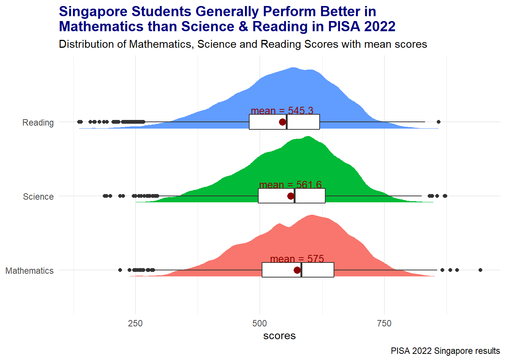
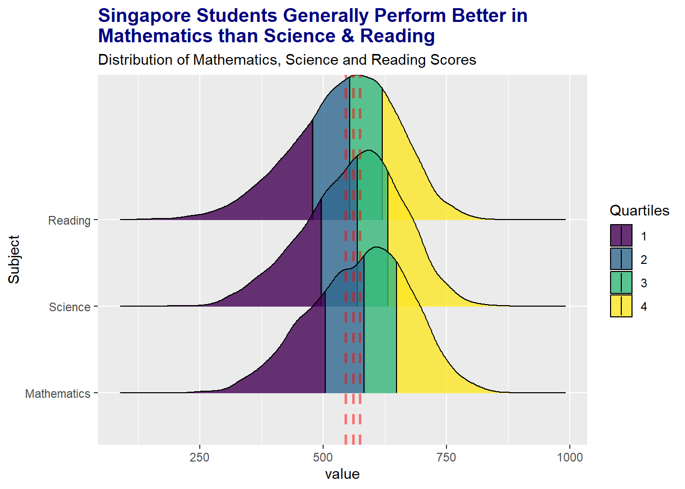
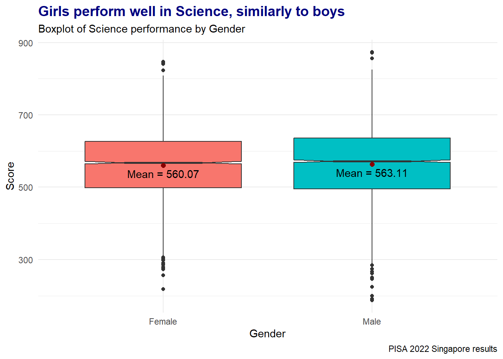
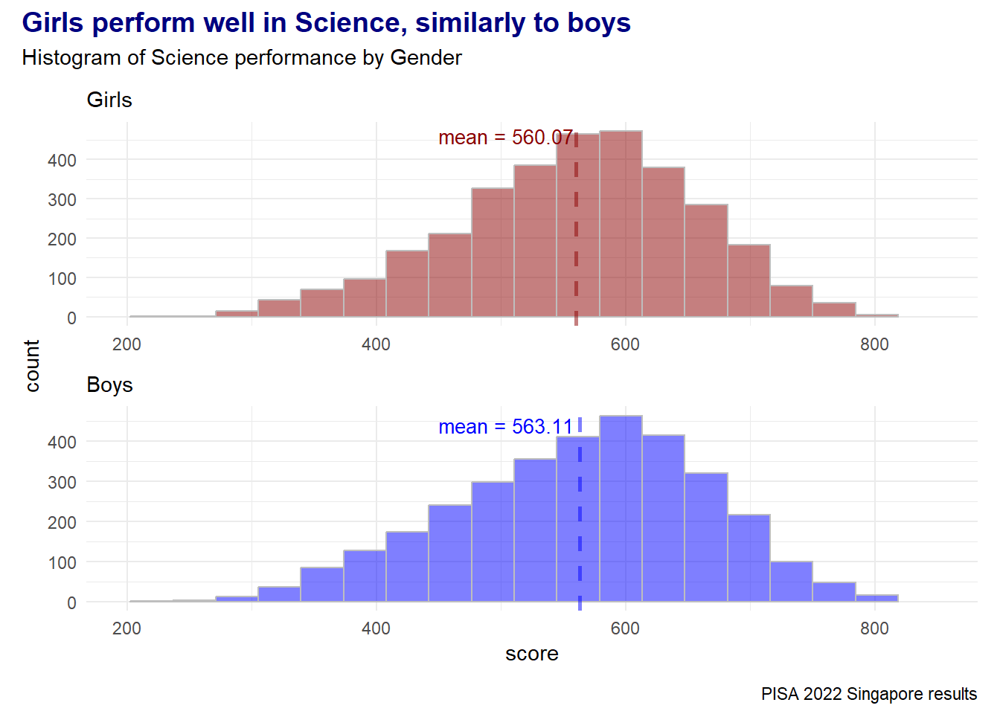
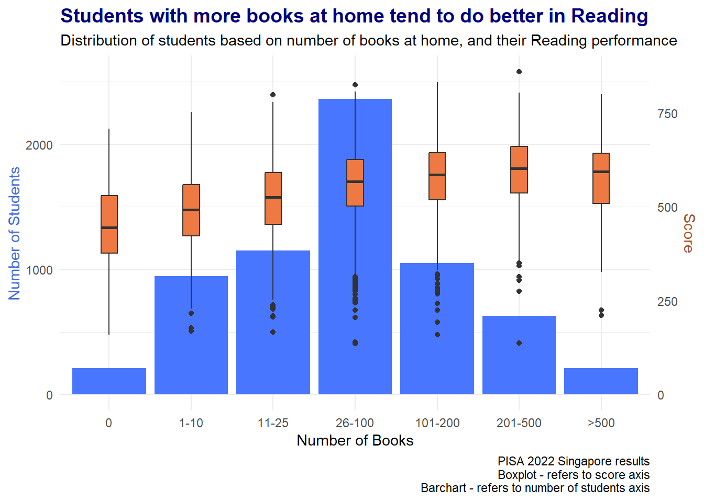

pacman::p_load(tidyverse, haven, dplyr, ggthemes, patchwork, plyr,
ggpubr, colorspace, reshape2, ggdist, ggridges )Take-home Exercise 2: Data Visualisation Makeover
1 The Task
In this take-home exercise, we are supposed to:
critic one of the Take-home Exercise 1 submissions in terms of clarity and aesthetics,
prepare a sketch for the alternative design by using the data visualisation design principles and best practices
remake the original design by using ggplot2, ggplot2 extensions, and tidyverse packages.
1.1 Installing R packages
The code below uses p_load() of the Pacman package to check if all the required packages are installed on the laptop. If they are, then they will be launched into the R environment.
1.2 Importing PISA data
We only use the PISA 2022 data set for Singapore.
Rows with NA are omitted too.
stu_qqq_SG <- read_rds("data/stu_qqq_SG.rds")
stu_qqq_SG <- stu_qqq_SG %>%
select("CNTSCHID", "CNTSTUID", "STRATUM", "ST004D01T", "ESCS", "ST255Q01JA",
"PV1MATH","PV1READ", "PV1SCIE") %>% na.omit()
stu_qqq_SG <- rename(stu_qqq_SG, c("ST004D01T" = "Gender",
"ST255Q01JA" = "Books",
"PV1MATH" = "Mathematics",
"PV1SCIE" = "Science",
"PV1READ" = "Reading"))
stu_qqq_SG$Gender[stu_qqq_SG$Gender == 1] <- "Female"
stu_qqq_SG$Gender[stu_qqq_SG$Gender == 2] <- "Male"
stu_qqq_SG = stu_qqq_SG %>%
mutate(Books = recode(Books,
"01" = "0",
"02" = "1-10",
"03" = "11-25",
"04" = "26-100",
"05" = "101-200",
"06" = "201-500",
"07" = ">500"))2 Data Visualisation Critique and Makeover
The original designs are taken from one of the take-home exercise 1 submissions.
2.1 Distributions of Maths/Reading/Science scores
2.1.1 Original design
Let’s look at this density chart that shows the distribution of 3 subject scores.

2.1.2 Critique
Clarity
The title has given a clear interpretation of what readers can expect when looking at the chart, i.e. Mathematics is a better-performing subject than Science and Reading. 👍
There is a subtitle to indicate what kind of chart it is. 👍
Missing caption to indicate the source of the data. ⚠️
The axes are labelled clearly with x-axis tick marks provided. All 3 distributions use the same x-axis range.👍
There is a legend for the colours, however, readers who are not good at statistics might not know what the quartiles 1, 2, 3, or 4 mean. Maybe we could use percentile instead of quartile and label 1 as <=25th, 2 as 26th-50th, 3 as 51th-75th, and 4 as >75th. ⚠️
Readers might not know how the conclusion is made - Mathematics is a better-performing subject - is it due to height of distribution, area of yellow range etc? Statistics summary (e.g. mean or median) could be added to help readers correlate better. ⚠️
Aesthetics
The bright colour contrast is appealing. 👍
Combining the three distributions in a chart is easy to make a comparison. 👍
Clean background colour to make the distributions stand out. 👍
2.1.3 Design Considerations
Draft 1
Let’s sketch the chart with dotted lines to represent the mean of each subject.

Though mean lines help to make the comparison easier, we would have 5 colours on the chart (the quartile colours and the mean line) that might confuse readers. So how can we represent the quartiles differently?
Draft 2
We can use a box plot to represent the quartiles and also include outliers to tell the spread better.
Adding rainclouds (data dots) might provide more information, however, it might make the chart more complicated and the data dots might not be so meaningful in deriving the conclusion.

2.1.4 Visualisation Make-over
Best make-over.
Show the code
temp_Data <- stu_qqq_SG[, c("Mathematics", "Science", "Reading")]
temp_Data <- melt(temp_Data, variable.name = "Subject")
ggplot(temp_Data, aes(x = value, y = Subject)) +
stat_halfeye(aes(fill = Subject),
adjust = 0.5,
justification = 0.1,
.width = 0,
point_colour = NA) +
geom_boxplot(width = 0.2) +
stat_summary(fun = mean, geom = "point", shape = 16,
size = 3, color = "darkred",
position = position_nudge(x = 0.0)) +
stat_summary(fun = mean, colour="darkred",
geom = "text", show_guide = FALSE,
vjust = -1, size = 3.5,
aes( label= paste0("mean = ",round(after_stat(x), 1)))) +
labs(y = NULL, x = "scores",
title = "Singapore Students Generally Perform Better in\nMathematics than Science & Reading in PISA 2022",
subtitle = "Distribution of Mathematics, Science and Reading Scores with mean scores",
caption = "PISA 2022 Singapore results") +
theme(axis.title = element_text(angle =360, vjust =.5,
hjust = 1, face = "bold",
colour = "navy")) +
theme_minimal() +
theme(legend.position = "none",
plot.title = element_text(size = 14, face = "bold",
colour = "navy"))
It is very tough to use different colours for the mean lines as the diagram has too many colours. Hence, this draft is not good.
Show the code
mMath = mean(stu_qqq_SG$Mathematics)
mScience = mean(stu_qqq_SG$Science)
mReading = mean(stu_qqq_SG$Reading)
ggplot(temp_Data, aes(x = value, y = Subject,
fill = factor(after_stat(quantile)))) +
stat_density_ridges(
geom = "density_ridges_gradient",
calc_ecdf = TRUE,
quantiles = 4,
quantile_lines = TRUE) +
scale_fill_viridis_d(name = "Quartiles", alpha = 0.8) +
labs(title = "Singapore Students Generally Perform Better in\nMathematics than Science & Reading",
subtitle = "Distribution of Mathematics, Science and Reading Scores") +
geom_vline(aes(xintercept = mMath),
color="red",
linetype="dashed",
linewidth=1,
alpha = 0.5) +
geom_vline(aes(xintercept = mScience),
color="red",
linetype="dashed",
linewidth=1,
alpha = 0.5) +
geom_vline(aes(xintercept = mReading),
color="red",
linetype="dashed",
linewidth=1,
alpha = 0.5) +
theme(plot.title = element_text(size = 14, face = "bold",
colour = "navy"))
Improvements made:
Chart Type: Replacing the quartiles shading with boxplots to show the interquartile range and median marks. We can also see where the outliers are and the frequency of outliers happens more in Reading at the lower end as compared to Science and Mathematics.
Statistical Values: Stating the mean value for each subject will allow users to make easier comparisons with the median marks. We can see that the mean and median score for Mathematics is higher than for Science and Reading. The mean score is lower than the median score for all 3 subjects.
Layout: Legend is not required now, so removing it will give more space for the plots.
Message Context: Include the context (PISA 2022) in the title.
Reference: A caption is included to show the source of the data.
Subtitle: The subtitle includes mean scores so that readers may infer that mean scores are used to make comparisons, hence the statement made in the title.
Aesthetic enhancements: The colours used for different subjects are for aesthetic purposes and should be consistently used for the subsequent charts that involve subjects.
2.2 Science Performance versus Gender
2.2.1 Original design
Let’s look at this density chart to show the distribution of Science scores among the genders.

2.2.2 Critique
Clarity
The title has given a clear interpretation of what readers can expect when looking at the chart, i.e. Girls are not necessarily weaker in Science. 👍 However, we have no idea how this conclusion is made as the 2 density graphs look similar! ⚠️
There is a subtitle to indicate what kind of chart it is. 👍
Missing caption to indicate the source of the data. ⚠️
The axes are labelled clearly with axes tick marks provided. 👍
There is a colour legend for the gender.👍
What do the 2 vertical lines represent? There is no information at all! ⚠️
What does density mean? Readers might not know how to interpret. ⚠️
Aesthetics
The colours used for males and females are typical. 👍
Clean background colour to make the graphs stand out. 👍
2.2.3 Design Considerations
The distributions of Science scores for Females and Males are very similar, hence it is not suitable to plot the two distributions in overlapping mode.
Draft 1
We should separate the two distributions and also include the statistical values (such as the mean) to allow readers to understand how the conclusion is derived.

As the histograms have similar shapes, it might be hard for readers to judge based on mean values.
Draft 2
Let’s use boxplots to compare the distribution. Readers will see that the interquartile range (IQR), median and mean values are similar for both genders.

2.2.4 Visualisation Make-over
Best make-over
Show the code
ggplot(data = stu_qqq_SG, aes(x = Gender, y = Science,
fill = Gender)) +
geom_boxplot(notch = TRUE) +
stat_summary(fun = "mean",
geom = "point",
color = "darkred",
size = 2) +
stat_summary(fun = mean, geom = "text",
color = "black", vjust = 1.5,
aes(label = paste0("Mean = ", round(..y.., 2)))) +
labs(y = "Score",
title = "Girls perform well in Science, similarly to boys",
subtitle = "Boxplot of Science performance by Gender",
caption = "PISA 2022 Singapore results") +
theme_minimal() +
theme(legend.position = "none",
plot.title = element_text(size = 14, face = "bold",
colour = "navy"))
The histograms are not easy to make comparisons as the shapes are similar for both genders. Hence, this draft is not suitable.
Show the code
stu_qqq_SG$Gender[stu_qqq_SG$Gender == 1] <- "Female"
stu_qqq_SG$Gender[stu_qqq_SG$Gender == 2] <- "Male"
f = stu_qqq_SG %>%
filter(Gender == "Female")
m = stu_qqq_SG %>%
filter(Gender == "Male")
p1 <- ggplot(f, aes(x = Science)) +
geom_histogram(bins = 20,
boundary = 100, alpha = 0.5,
color = "grey", fill = "darkred") +
xlim(200, 850) +
geom_vline(aes(xintercept = mean(Science)),
color="darkred",
linetype="dashed",
linewidth=1,
alpha = 0.5) +
annotate(geom = "text", x = 580, y = 420,
label = paste0("mean = ", round(mean(f$Science),2)),
vjust = -0.5,
hjust = 1.2,
size = 3.5, color = "darkred") +
labs(y = "count", x = NULL, subtitle = "Girls") +
theme_minimal()
p2 <- ggplot(m, aes(x = Science)) +
geom_histogram(bins = 20,
boundary = 100, alpha = 0.5,
color = "grey", fill = "blue") +
xlim(200, 850) +
geom_vline(aes(xintercept = mean(Science)),
color="blue",
linetype="dashed",
linewidth=1,
alpha = 0.5) +
annotate(geom = "text", x = 580, y = 400,
label = paste0("mean = ", round(mean(m$Science),2)),
vjust = -0.5,
hjust = 1.2,
size = 3.5, color = "blue") +
labs(y = "count", x = "score", subtitle = "Boys") +
theme_minimal()
(p1 / p2) +
plot_layout(axis_titles = "collect", guides = "collect") +
plot_annotation(title = "Girls perform well in Science, similarly to boys",
subtitle = "Histogram of Science performance by Gender",
caption = "PISA 2022 Singapore results",
theme = theme(plot.title =
element_text(size = 14, face ="bold",
colour = "navy"))) 
Improvements made:
Chart Type: Replace the density graphs with boxplots to allow readers to compare the 5 summary points (min, max, median, first and third quartiles). Readers can also see the number of outliers in each gender.
Statistical Values: The mean score of each gender is also shown in the boxplots to make the comparison easier.
Clarity: No overlapping of the distributions as the boxplots are placed side by side with the same y-axis scale.
Clear Message: “Girls are not necessarily weaker in Science” may seem to be defending an accusation statement that girls are weaker in Science as compared to boys. To make the message neutral, the title has changed to mention that both genders did similarly well.
Reference: A caption is provided to indicate the source of the data.
Aesthetic enhancements: The colours used for different genders are for aesthetic purposes and should be consistently used for the subsequent charts that involve gender.
2.3 Reading Performance
2.3.1 Original design
Let’s look at this density chart to show the Reading performance among the students who have read different numbers of books.

2.3.2 Critique
Clarity
The title suggests causation between the number of books and Reading scores. ⚠️ The title should be rephrased such that it states possible correlation instead of causation.
There is a subtitle to indicate what kind of chart it is. 👍
Missing caption to indicate the source of the data. ⚠️
The axes are labelled clearly with axes tick marks provided. 👍
What does the two colours mean? Do we look at the division line to make a comparison or the area of each colour (which is the same for all)⚠️
Aesthetics
The contrasting colours used are appealing. 👍
Clean background colour to make the graphs stand out. 👍
2.2.3 Design Considerations
We need to make the comparison visible to the readers so that they can get the same conclusion as the title suggested.
Let’s replace the density graphs with boxplots to allow readers to see the 5 summary statistics for each book category.

Can we add more information to the chart? What about the number of students in each book category, so that we can show that more students in the category do not necessarily mean higher score?
2.3.4 Visualisation Make-over
Show the code
r = stu_qqq_SG %>%
select(Books, Reading) %>%
mutate(Books = fct_relevel(Books,
"0",
"1-10",
"11-25",
"26-100",
"101-200",
"201-500",
">500"))
ggplot(r, aes(x = Books)) +
geom_bar(aes(y = ..count..), stat = "count", fill = "royalblue1") +
geom_boxplot(aes(y = Reading * 3), position = "dodge", width = 0.2,
fill = "sienna2") +
scale_y_continuous(name = "Number of Students",
sec.axis = sec_axis(~ . / 3, name = "Score")) +
theme_minimal() +
labs(x = "Number of Books",
title = "Students with more books at home tend to do better in Reading",
subtitle = "Distribution of students based on number of books at home, and their Reading performance",
caption = "PISA 2022 Singapore results\nBoxplot - refers to score axis\nBarchart - refers to number of students axis") +
theme(plot.title = element_text(size = 14, face = "bold", colour = "navy"),
axis.title.y.left = element_text(colour="royalblue"),
axis.title.y.right = element_text(colour="sienna"))
Improvements made:
Chart Type: Replace the density graphs with boxplots to show the 5 summary statistics. Readers can compare that the median score is higher for students who have more books as compared to those who have less than 10 books.
Useful Information: Readers can see the number of students in each book category from the bar chart, which is additional information from the original design.
Title: The title has changed to a non-causation statement, to suggest a correlation between the number of books at home and reading scores.
Reference: A caption is provided to indicate the source of the data.
Aesthetic enhancements: Colours are added - one for box plots on the reading performance and one for the bars on the student counts. This will allow readers to focus on each colour comparison.
Axes adjustment: The x-axis label is stated with only the numerical values (e.g. ‘1-10’ as compared to ‘1-10 books’) as the x title already indicates that it is referring to books. This prevents the x-axis labels from being overcrowded.
Instructions: Since there are two y-axes (one for each chart), instructions are stated at the bottom right corner so that readers know which axis is for which chart. The y-axis titles are coloured in the shades of their respective chart fill.
3 Learning points
The key learning points of this exercise are:
First of all, it is important that we craft the message we want to tell the readers before designing our visualisation.
Then we would need to design a few possible charts to portray our message and see which is the best to be able to do so with clarity.
We need to always check for clarity and aesthetics of the visualisation plotted. Should we add colours to distinguish the features? Should we patch graphs together to make it compact? Or should we have less information which is considered more? These are the questions that we need to keep asking ourselves when we create our visualisations.
PATIENCE is required in this learning journey as we need to redo some designs or think of other possible things to make the visualisations clearer.